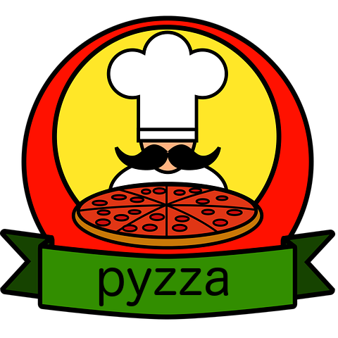

<app-spinner></app-spinner>
<nav class="navbar navbar-expand-lg navbar-dark bg-dark">
  <a class="navbar-brand" routerLink="/">
    
  </a>
  <button class="navbar-toggler" type="button" data-toggle="collapse" data-target="#navbarSupportedContent" aria-controls="navbarSupportedContent" aria-expanded="false" aria-label="Toggle navigation">
    <span class="navbar-toggler-icon"></span>
  </button>

  <div class="collapse navbar-collapse" id="navbarSupportedContent">
    <ul class="navbar-nav mr-auto">
      <li class="nav-item" routerLinkActive="active">
        <a class="nav-link" routerLink="/pizza/liste"> Pizza</a>
      </li>
      <li class="nav-item" routerLinkActive="active">
        <a class="nav-link" routerLink="/ingredient/liste">🥕 Ingrédients</a>
      </li>
    </ul>

    <ul class="nav navbar-nav navbar-right">
      <li class="nav-item" routerLinkActive="active" *ngIf="!isLoggedIn()">
        <a class="nav-link" routerLink="/login"><i class="fa fa-user-circle-o" aria-hidden="true"></i> Connexion</a>
      </li>
      <li class="nav-item active" routerLinkActive="active" *ngIf="isLoggedIn()">
        <a class="nav-link" (click)="logout()" routerLink="/login"><i class="fa fa-power-off" aria-hidden="true"></i> Déconnecter</a>
      </li>
    </ul>
  </div>
</nav>
<div class="container">
  <router-outlet></router-outlet>
</div>
